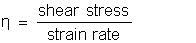
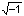
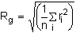
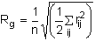
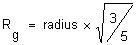
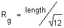
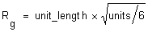

Shear thickening sauces
There are two rheological properties of particular importance to hydrocolloid science. These are their gel and flow properties.
 Viscosity
Viscosity
 Viscoelasticity
Viscoelasticity
 Structural effects
Structural effects
 Further rheological terminology
Further rheological terminology
Viscosity is a property of fluids that indicates resistance to flow or stirring. When a force is applied to a volume of material, then a displacement (deformation) occurs. If two plates (area, A), separated by fluid distance (separation height, H) apart, are moved (at velocity V by a force, F) relative to each other, Newton's law states that the shear stress (the force divided by area parallel to the force, F/A, Pa) is proportional to the shear strain rate (V/H, s−1 ). The proportionality constant is known as the (dynamic) viscosity (η, Pa ˣ s−1). Viscosity varies over many orders of magnitude from 10−6 - 1013 Pa ˣ s−1 and depends on temperature and pressure. It is governed by the activation energy barrier for molecular rearrangements, which depends on the intermolecular interactions
Elastic and sliding components of the displacement
caused by shear stress
The effect (shear strain) is quantified by the displacement per unit height (D/H), and the rate of this effect (strain rate) is the velocity per unit height (V/H), where the height is the distance to a relatively unaffected position. The viscosity (η) is the tendency of the fluid to resist flow and is defined by:

Increasing the concentration of a dissolved or dispersed substance generally gives rise to increasing viscosity (that is, thickening), as does increasing the relative molecular mass (molecular weight) of a solute.
Comparison of Newtonian, shear-thinning
and shear-thickening fluids
With Newtonian fluids (typically water and solutions containing only low molecular mass material) the viscosity is independent of shear strain rate and a plot of shear strain rate (for example, the rate of stirring) against shear stress (for example, force, per unit area stirred, required for stirring) is linear and passes through the origin.
S-Shaped dependency of log(viscosity) on log(shear rate)
At moderate concentrations above a critical value (C*, [244]), hydrocolloid solutions exhibit non-Newtonian behavior where viscosity depends on the shear strain rate. It is shown typically, as opposite, where γ is the shear strain rate, η0 and η∞ are the viscosities at zero and infinite shear strain rate respectively, and τ is a shear-dependent time constant that represents the reciprocal of the shear strain rate required to halve the viscosity.
The exponent (m) gives the degree of thinning
(0 = no thinning, that is, Newtonian behavior; 1 = maximal
thinning; < 0 = shear-thickening) and determines the slope
of the graph (that is, the slope is greater when m is
greater). The equation is one of several empirical relationships
that can be used. The viscosity depends on the cross-sectional
area in the direction of flow. At low flow rates, molecules
with preferred conformations that are long and thin have effectively
large cross-sections due to them tumbling in solution. However,
at high shear strain rate, the molecules align with the flow,
giving much smaller effective cross-sections and hence much
lower viscosities (see red line (a) above). More compact molecules are not so much affected
by their orientation relative to flow. Hence their viscosity
changes little with shear strain rate (see blue
line (b) above representing a solute with the same
molecular volume but more compact shape). The gradient of
the central linear part of the above log-log curve is equal
to minus the exponent (-m); 1-m is the behavior index (n)
also given by the exponent in the Ostwald relationship: shear
stress is proportional to the shear strain rate to the
power n (that is, shear stress = k γn).
A value for n of unity indicates Newtonian behavior, increasingly
non-Newtonian behavior lowers this behavior
index towards zero (for example, 0.25% xanthan solution has n = 0.4). [Back to Top  ]
]
Many hydrocolloids are capable of forming gels of various strengths dependent on their structure and concentration plus environmental factors such as ionic strength, pH and temperature. The combined viscosity and gel behavior (viscoelasticity) can be examined by determining the effect that an oscillating force has on the movement of the material.
Elastic and sliding components of the displacement
caused by shear stress
With viscoelastic hydrocolloids, some of the deformation caused by shear stress is elastic (for example, the contortion of the chains into high energy conformations) and will return to zero when the force is removed. The remaining deformation (that is, the sliding displacement of the chains through the solvent) will not return to zero when the force is removed. Under a constant force, the elastic displacement remains constant, whereas the sliding displacement continues, so increasing.
If the force varies sinusoidally with time, then the viscous (sliding) energy is always positive and lost as heat, whereas the changes in the elastic energy may be positive or negative and are recouped.
Lagging sine wave of shear rate behind shear stress
Under such conditions, the shear strain rate lags behind the changes in the causative force by a phase angle φ. φ is zero for an ideally elastic gel (all energy stored in the material) and 90° for an ideally viscous liquid (all energy dissipated as heat).
shear stress = shear strain ˣ sin(ωt + φ)
Solids respond with very short delays in the output response (φ very small), whereas liquids have longer delays. In real solutions, the shear stress wave may not keep the shape of the strain rate [2913].
When changing stress,
tan(phi) = elastic stress/viscous stress
It is convenient to express the relationship between the shear stress, elastic stress, and viscous stress (resulting from changing stress) in terms of a complex number (= i) where the viscous stress is in-phase, and the elastic stress is out-of-phase and oppositely-directed.a
shear stress = viscous stress - i ˣ elastic stress
complex viscosity = viscosity - i ˣ elasticity
tan(φ)
= elasticity/viscosity
Variation of the viscoelastic parameters with frequency
The shear modulus (resulting from changing strain) is the ratio of the shear stress to the shear strain. It follows from the complex relationship similar to the above that:
G* = G' + iG''
where G* is the complex shear modulus, G' is the in-phase storage modulus and G'' is the out-of-phase similarly-directed loss modulus; G* = √(G'2 + G''2). The frequency where these parameters cross over corresponds to a relaxation time (τ) specific for the material.
When changing strain,
tan(delta) = loss modulus/storage modulus
It follows that,
tan(δ) = G''/G'
where tan(δ) quantifies the balance between energy loss and storage.
As tan(45°) =1, a value for tan(δ)
greater than unity indicates more "liquid" properties,
whereas one lower than unity means more "solid"
properties, regardless of the viscosity. [Back to Top  ]
]
Linear and substantially linear
polymers behave in a qualitatively predictable way
to the relationship of their viscosity to their structure and conformation.
In dilute solutions, this relationship depends effectively on the
volume "swept out" (that is, the hydrodynamic volume)
by the molecules as they tumble in the solution. At these low concentrations,
where there is effectively no interaction between molecules and
they are at their most extended, the viscosity may be little
different from that of water;
this slight difference depends on the total spherical volume (itself
dependent on concentration and radius of gyration of the solute) taken up by the freely rotating molecules. The relationship
between viscosity with concentration is generally linear up to viscosity
values of about twice that of water. This dependency means that
more extended molecules increase the viscosity to greater extents
at low concentrations than more compact molecules of similar molecular
weight. Generally, less-flexible links between sequential monomers
in the polymeric chains give rise to more extended structures, but
the linkage spacing, direction, and charge density are all important
factors. The molecules most capable of an extended structure, due
to the maximal linkage spacing and direction are -(1 4)-di-equatorially
linked between pyranose residues, whereas those least capable
contain -(1
4)-di-equatorially
linked between pyranose residues, whereas those least capable
contain -(1 3)-diaxially linked pyranose
residues. Where residues are negatively charged, the repulsion between
similar charges increases molecular extension, but this can be reduced
at higher ionic strength or below the pKa's of the anionic
groups. This reduction is particularly noticeable for polymers
with high molecular mass. The lack of much change in the viscosity
of such molecules with ionic strength is indicative of an inflexible
rod-type conformation. It should be noted that although attaching
short sugar units as branch points to linear polysaccharides does
increase their rigidity into an extended structure, and this is at the
cost of greatly increased molecular mass.
3)-diaxially linked pyranose
residues. Where residues are negatively charged, the repulsion between
similar charges increases molecular extension, but this can be reduced
at higher ionic strength or below the pKa's of the anionic
groups. This reduction is particularly noticeable for polymers
with high molecular mass. The lack of much change in the viscosity
of such molecules with ionic strength is indicative of an inflexible
rod-type conformation. It should be noted that although attaching
short sugar units as branch points to linear polysaccharides does
increase their rigidity into an extended structure, and this is at the
cost of greatly increased molecular mass.
The extended nature of the molecules has an extreme effect on the molecular mass dependency of the viscosity. This is as the hydrodynamic volumes (and hence viscosities) of compact (highly flexible but poorly hydrated) molecules increase approximately as the cube root of their molecular mass, whereas those of more-extended well-hydrated molecules (such as alginate and xanthan gum) increase approximately linearly with molecular mass. The relationship between the intrinsic viscosity [η] and the relative molecular mass (Mw) is given by [η] = K Mwa, the Mark-Houwink equation where K and a are constants. Amylose, carboxymethylcellulose, arabinoxylans, and guar all have exponents (a) of about 0.7. Knowledge of these constants allows the viscosity-averaged molecular mass to be calculated from viscosity data.
The viscosity increases with concentration until the shape of the volume occupied by these molecules becomes elongated under stress causing some overlap between molecules and a consequent reduction in the overall molecular volume with the resultant effect of reducing the amount that viscosity increases with concentration (under stress).
Apparent synergy a critical concentration C*
At higher concentrations (above a critical concentration C*), all the polymer molecules in the solution effectively overlap, interpenetrate, and become entangled (that is, their total hydrodynamic volume appears greater than the solution volume) even without being stressed. This changes the solution's behavior from mainly viscous to mainly elastic, with the viscosity (η0 at zero stress) being mainly governed by the mobility of the polymer molecules. C* will depend on the shear strain rate as, at high shear strain rate, the molecules take up a less voluminous shape. At higher concentrations, the viscosity increases up to about the fifth power of the concentration. This can cause the apparently synergic behavior of hydrocolloid mixtures, particularly if they cause phase separation with its inherent concentration increases.
At high shear strain rate (and sufficient concentration),
molecules may become more ordered and elastic. Shear flow (and its
related stress) causes molecules to become stretched and compressed
(at a right angle to stretch), resulting in isotropic solutions becoming
anisotropic. After release from such conditions, the molecules relax
back with time (the relaxation time). At low concentrations below
the critical value (C*), the shear modulus of hydrocolloid solutions
is mainly determined by the loss modulus at low frequencies (that is, G'' is relatively high
for viscous materials). As G'' depends on the frequency but G' depends on the square of the frequency, G' becomes more important at higher frequencies. At higher concentrations
in viscous solutions, G' is generally
greater than G'' throughout
a wide frequency range. This difference is very large for strong
gels when the frequency has an almost negligible effect (G' is high for elastic materials).
Such gels often form above another critical concentration specific
to the hydrocolloid, where junction zones occur so stabilizing intermolecular
associations. [Back to Top  ]
]
Dilatancy (shear-thickening) shows an increase in viscosity with shear stress and strain due to structural enhancement. An example is uncooked cornstarch paste, where shear stress squeezes the water from between the starch granules allowing them to grind against each other. This property is often used in sauces where, for example, tomato sauce flow is prevented under small shear stress but then catastrophically fails, producing too great a flow under greater stress (shaking). Another (and the strictly correct usage for the term) meaning for dilatancy concerns the increase in the volume of suspensions of irregular particles with shear due to the creation of small but empty cavities between the particles as they scrape past each other.
Dynamic viscosity is the commonly used form of viscosity (also sometimes called bulk viscosity, shear viscosity, or volume viscosity), often abbreviated to just viscosity
Viscosity describes the resistance to flow, and it is related to the way the molecules move and reorganize on the molecular scale. The units are either the SI units of pascal seconds (Pa ˣ s) or the poise (P = 0.1 Pa ˣ s). Sometimes the dynamic viscosity is denoted by the symbol μ.
Eutectic point is the lowest possible melting point (equilibrium freezing point) that a mixture of solutes may have. No other mixed composition of the same materials will have a lower melting point. Due to surface effects, thin films of fluid may remain below the eutectic point in microcrystalline ice [1010].
Fluidity is the reciprocal of the viscosity (= 1/η).
Phase diagram showing the eutectic point and the glass transition point
In the glassy state, the viscosity is exceptionally high (> 1012-1013 Pa ˣ s), conformational changes are severely inhibited, and the material is metastably trapped in a solid but microscopically disordered state. The material is rigid and brittle. Biomolecules (and food) are most stable in this state. The segmental motion of macromolecules occurs when the temperature increases through the glass transition temperature (see the blue line opposite; Teu is the eutectic point, and Tg is the glass transition temperature at the endpoint of freezing).
The glass transition temperature (Tg) is the temperature at which the molecular relaxation time reaches 100 s, and the viscosity of the system becomes 1012 Pa ˣ s. It is a time-temperature kinetic transition rather than a thermodynamic transition, and different methods of cooling produce slightly different glass transition temperatures. Usually, there are discontinuities in the physical, mechanical, electrical, thermal, and other properties of the material. Therefore, the value of Tg depends somewhat on the method of its determination; the glass transition (unlike true thermodynamic phase changes) occurs over a range of a few Kelvin. In the diagram, the supersaturated solution is unstable with respect to the solution and the crystalline solid. Further discussion of this topic may be found in a review of water and solids mobility in foods [720].
Intrinsic viscosity ([η]) is the limit of the reduced viscosity extrapolated to zero concentration. As with the reduced viscosity, it has units of reciprocal concentration, for example, mL g−1.
Kinematic viscosity (ν) is the dynamic viscosity divided by the density of the liquid (= η/ρ). The units are either the SI units of a meter squared per second (m2 ˣ s−1) or the stoke (St).
Poise (P) is a unit of dynamic viscosity (dyne ˣ s ˣ cm−2). The SI unit of viscosity is Pa s (pascal second = N ˣ s ˣ m−2 = 10 poise).
Pseudoplastic materials instantaneously decrease in viscosity with an increase in shear strain rate (for example, flow) and are therefore easier to pump and mix. They are shear-thinning, and this is often a consequence of high molecular mass molecules being untangled and oriented by the flow. Generally, this behavior increases with concentration.
The radius of gyration
Radius of gyration (Rg) is defined as 
where n is the number of entities in the chain, and ri is the radius of each from the center of mass (also defined using the distance between all pairs of entities); 
Typically for a linear polysaccharide (Mw 106), this would be approximately 6 nm if spherically packed
(  ), 940 nm if as an extended stiff rod (  ), and 17 nm
(  ) if as a random coil. Its relationship to the effective radius the tumbling molecule represents to a flowing liquid (hydrodynamic radius, Rh) depends upon the flexibility and density of the structure; Rg/Rh generally being about 1.6 but lower for branched, and globular structures and gels.
Reduced viscosity (ηred) is the specific viscosity divided by the concentration. It has units of reciprocal concentration, for example, mL g−1. It is related to the intrinsic viscosity [η] by the Huggins-Kramer equation: ηred = [η] + k1[η]2c, where c is the concentration.
Relative viscosity (ηrel) is the ratio of the dynamic viscosity of the solution to that of the pure solvent (ηrel = η/η0 where η is the dynamic viscosity of the solution, and η0 is the dynamic viscosity of the solvent). As it is a ratio, it is dimensionless, having no units. It is related to the intrinsic viscosity [η] by the Huggins-Kramer equation:
ln(ηrel)/c = [η] + k2[η]2c where c is the concentration.
Shear stress is the force divided by area parallel to the force, F/A. The SI unit is the pascal, Pa.
Specific viscosity (ηsp) is one less than the relative viscosity (ηsp = ηrel -1; ηsp = (η - η0)/η0 where η is the dynamic viscosity of the solution and η0 is the dynamic viscosity of the solvent). As with the relative viscosity, it has no units.
Stoke (St) is a unit of kinematic viscosity (cm2 ˣ s−1). The SI unit of kinematic viscosity is m2 ˣ s−1 ( = 10000 stoke).
Thermogelling materials gel above a specific temperature, and the process is usually reversible.
Thixotropic liquids exhibit a time-dependent response to shear strain rate over a longer period than that associated with changes in the shear strain rate. They may liquefy on being shaken and then solidify (or not) when this has stopped.
a See a similar treatment of dielectric [Back]
Home | Site Index | Hydrocolloids | Polysaccharide hydration | LSBU | Top
This page was established in 2001 and last updated by Martin Chaplin on 28 October, 2021